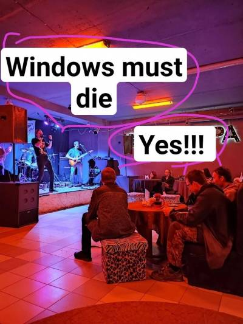

Колонка с юмором
Встречи Kirov OSC | LUG
В данном разделе вы можете найти информацию о встречах Kirov Open Source Comunity и Kirov Linux User Group
В данном разделе вы можете найти информацию о встречах Kirov Open Source Comunity и Kirov Linux User Group